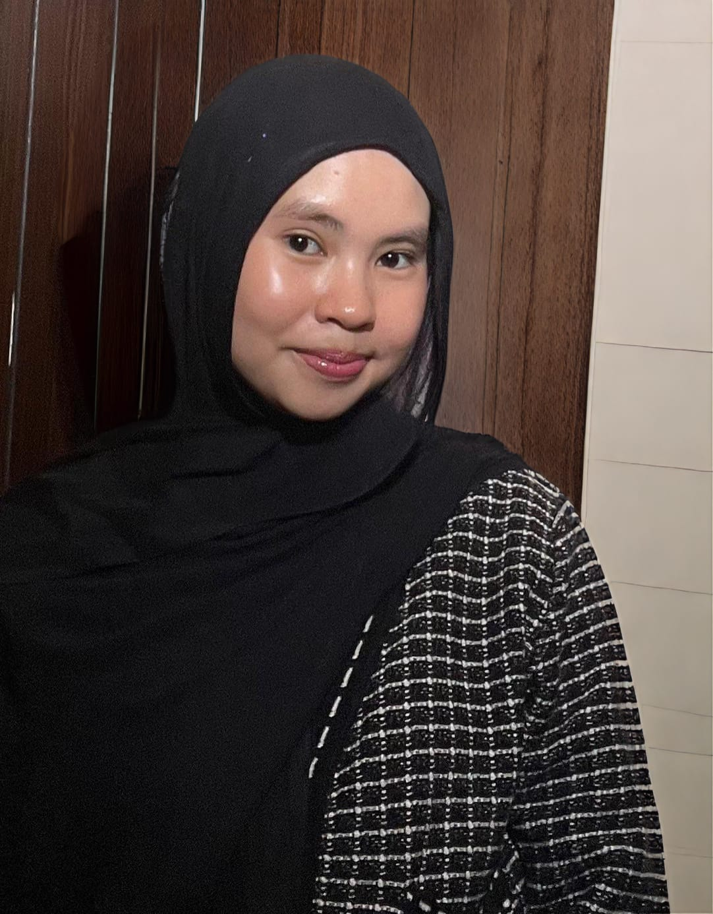

Hi! I'm Sabrina
Welcome to my personal webpage! Feel free to explore and learn
more about me, my interests, and my journey.
Let's explore my journey, intersets, and experience together!

Hello! I'm Sabrina Putri Giok Siregar, an Information Systems student who loves learning new things
and exploring different experience. I'm interested in technology, design and personal development.
During my senior highschool year, I had the opportunity to take part in various ambassador,youth, and voluntary programmes,
such as:
Instagram : Visit Instagram
Linkedln : Visit Linkedln